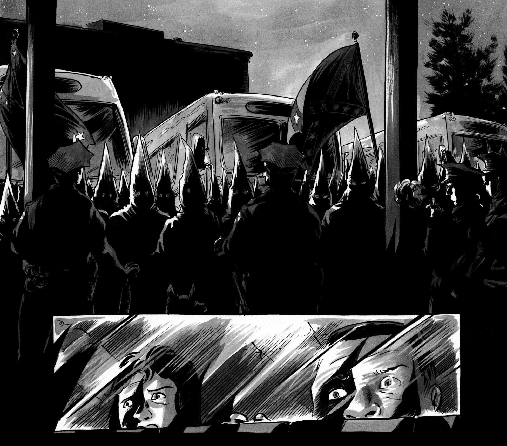
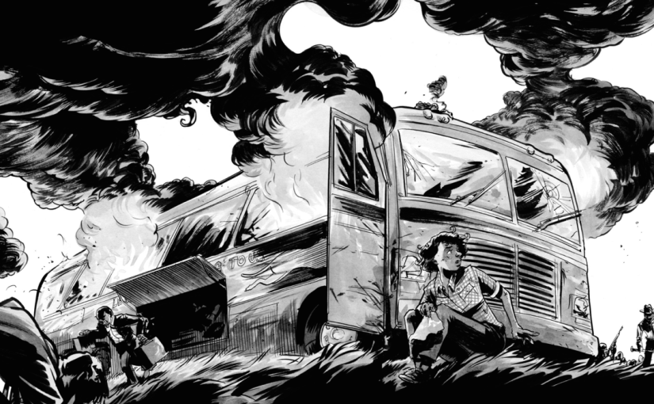

March: Book Two
In March: Book Two we see a lot of illustrated examples of cruel racism and the ways the protesters opposed it. For instance, when there was a meeting in Ralph Abernathy's Church, we not only saw how the mob was fierce and cruel against the black people, but we also saw how the government responded to such violence. When the mob got extremely angry, the National Guard suddenly appeared and saved the people that were meeting in the church; leaders of the protest thought that the National Guard came to protect them, but after the meeting ended and people tried to go out of the church, they found out that the guard actually came to imprison them in the church. While the government wasn’t that cruel as the mod that wanted to harm black protesters, it still is very hostile to them. That way, it is harder for the protesters to continue their mission and oppose such an aggressive society and the government.

Police standing between KKK and freedom riders.

Mob attacking a bus with freedom riders.